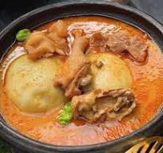

FUFU
Home

Description
This is a Ghanaian delicacy called fufu. It is made from cassava and plantain.
the cassava and plantain are cooked and pounded to get the final product
Ingredients
Steps
- Peel the Cassava and plantain
- Cut them into smaller pieces
- put them in a pot and add water
- Boil for about 30 minutes max
- After boiling pound both cassava and plantain together
- after pounding till designed feel is gotten proceed to eat